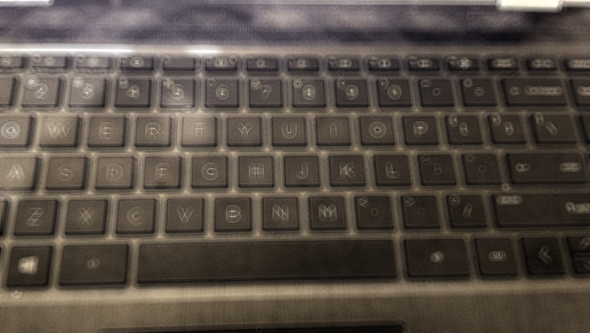

Keyboard Shortcuts
Keyboard shortcuts are a useful way to quickly do a task without needing to click button using the mouse. Below is a list of shortcuts that you can use to quickly do tasks.

- Control C: Copies the selected image
- Control V: Pastes the Image onto the page
- Control R: Shows the rulers on the screen
- Control W: Closes the window that you are currently on
- Shift F: Changes the window into fullscreen mode
You can use Google search to find more useful shortcuts that aren't on this list.
Now click the "Tip" button on the top of this page to see tips.